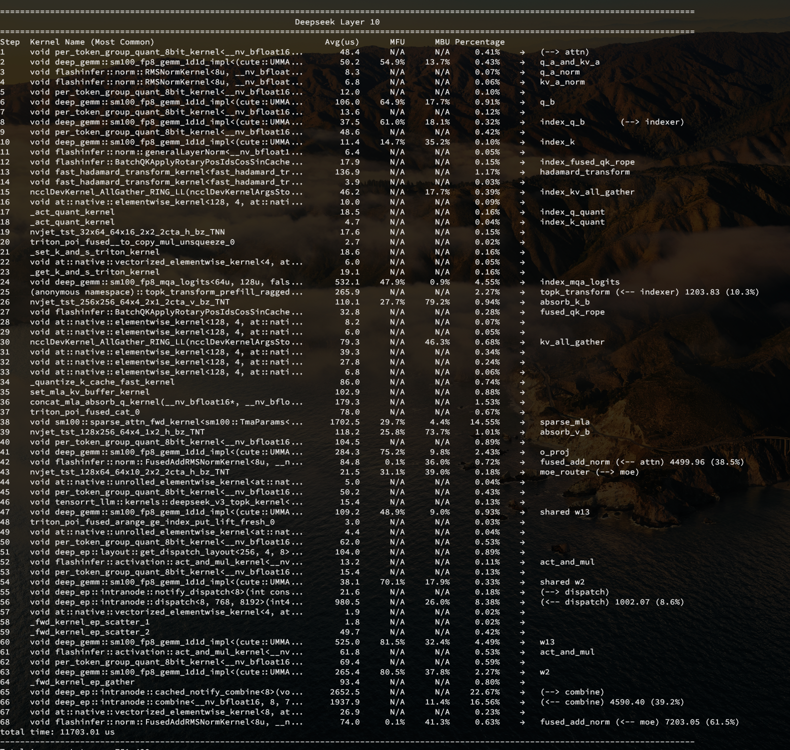

压测工具 aiakperf
- 外部通用测试
- 引擎单测
- Prefill 定长/变长 单测
- Decode 定长/变长 单测
- 自带简单 Router
性能大图
Prefill
- 结合
[chunked size, seq_len]分析 prefill 的绝对性能 - 分析
[seq_len, prefix_hit_rate]情况下的 prefix cache 性能损耗
Decode
结合这三个维度 [q_len, kv_len, bs]
自动化测试测量引擎定长的绝对性能
算子大图
- 自动化测试 Prefill/Decode 定长 Profile 和分析，导出图表
- 自动计算 Kernel 的 MFU/MBU/时间占比
